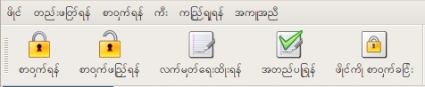

Welcome to the gpg4usb project
gpg4usb is a very easy to use and small portable editor to encrypt and decrypt any text-message or -file
you want.
Our aim is, to give anyone the possibility to send and receive secure encrypted messages anywhere -
on any computer out there, no matter if Microsoft Windows(TM) or Linux is running on it.
Therefore it's usage is self-describing, and the user-interface as simple as possible.
gpg4usb is free software, and it is licensed under the
GNU General Public License (GPL).
If you want to give it a try, please get our latest release here
or visit our download section, get the files and
unzip it onto your usb-pendrive... et voilà: you're done and ready to go!
News
2011-12-18: We added translation for Burmese. Thanks a lot to Russel, who has send us translation files for the beautiful Burmese language.

To use Burmese language, the appropriate font has to be installed on the system, e.g. the Myanmar3 Unicode font on Windows. On linux, this font is contained in the ttf-sil-padauk package.
2011-11-19: Due to bug in signing UTF-8 encoded messages we provide a bugfix release 0.3.1.1. So you won't get text like "??????" anymore when signing unicode messages. Get it from the download section.
2011-11-16: Sign and verify finally arrive with gpg4usb 0.3.1!
This was one of the most requested features for gpg4usb.
So here it is, available with our new release. Verification of signed messages
is easier in combination with downloading the sender's key from a keyserver. So we also present:
Import public keys from keyserver.
Thank's a lot to Tom for the new Vietnamese translation and to our other translators for their continuous work.
We also fixed the long outstanding "stealth mode"-bug - GnuPG creating an empty directory in the windows Application Data folder.
Hurry and download the new release.
New features:
- Sign and verify messages
- Import keys from keyserver
- Operation to remove double line breaks caused by some webmailers
Bugfixes and changes:
- Added Vietnamese translation
- Don't create empty directory in Application Data folder on windows
- Copyable email address in keylist
- Set default filename of exported key to <keyowner-name>.asc
- Added "show keydetails" to context menu of keylist
- Changed license to GPLv3
- Add warning for expired keys in details dialog
- Strike out expired keys in keylist
- Fix crash when hitting save in empty attachment
- Don't show icons in menus
- Fix crashes if no tab is open
- Add public key block to private key export for compatibility with older GnuPG versions
2011-01-19: 0.3.0 released! Gpg4usb supports tabs in the text editor now. This eases working on several documents - you could write your response and have the email opened in the same window. As we imagined this a better way of handling documents, we decided to go for the next major number. Due to the great and quick work of our translaters, the application is available in six different languages. If you want to provide your language, examine the translation documentation. Take a look at the screenshots and download here.
New features:
- Tabbed text editor
- Quote action, allowing email style reply
- Add keyfiles to keylist via drag'n'drop
Bugfixes and changes:
- Update the Windows Qt library to 4.7
- Warn before overwriting existing files in file encryption
- List keys in deletion dialog
- Encrypt and decrypt undoable
- Allow decryption of empty messages
Signing, verifying and communication with key servers will come in the 0.3 series. Stay tuned to your portable GPG editor - there's nice stuff in the making.
2010-12-01: 0.2.5 is out! We proudly present you a shiny new settings dialog. Its now possible to remember password for a session and messages encoded "quoted printable" are decoded now. Viriato was so kind to send us an italian translation. The still experimental "decode PGP/MIME" feature allows to open attachments with the responsible application. Also we fixed some long outstanding bugs and updated gpg-binaries to the latest version. Take a look at the screenshots or proceed directly to the download page.
Many thanks to our translators for the smooth and quick translation process short before release again. You are great!
New features in version 0.2.5:
- Tabbed settings dialog
- Redo action in edit menu
- Optional "remember password" function
- Italian translation
- Decoding "quoted printable" works now
- PGP/MIME attachments provide "open with external application" now. PGP/MIME support still considered experimental.
The following bugfixes/changes were made in version 0.2.5:
- Ask before overwriting existing files in file encryption
- Syncronize checked keys between file encryption dialog and mainwindow.
- Fix crashing on decrypting twice.
- Update GPG binaries to 1.4.11
- Update the Linux Qt library to 4.7
- Static linux build is now done on debian etch, this means libc => 2.3.6 supported.
2010-06-19: Summer, sun and new release. Within not quite a month we present you the result of newest polishing and bug-fixing. Viriato showed up and was so kind to provide a spanish translation. Many thanks to him and the other translators for updating the translation files.
Added features in version 0.2.4:
- Open file from command line
- Added setting to save checked private keys on exit
(kind of "encrypt to self"-behaviour) - Added link to online-tutorial in help menu
- Added spanish translation
- Added undo to edit-menu
The following bugfixes/changes were made in version 0.2.4:
- In save-dialog on exit, don't exit, if cancel is hit.
- Fixed multilingual and multiplatform behaviour of shortcuts.
- Statically build with Qt 4.5 on Debian Sarge again, so it should run on rather old Linux-Distris
- From now on the download files are upx-compressed by default
Furthermore we started the implementation of PGP-MIME-parsing. This implementation is rather incomplete. We're not sure, if it's working under all circumstances. Also we're not yet satisfied with the GUI, so we marked it experimental in the settings dialog. If this warning is not keeping you away from testing, and you find errors or non-working PGP-MIME encoded messages, don't hesitate to report.
2010-05-02: Settings, Qt 4.5 and Português do Brasil: We added a settings dialog, fixed a bug in file encryption and added Brazilian translation (many thanks to Alessandro for this). Furthermore we updated to Qt 4.5.
Added features in version 0.2.3:
- Added settings dialog
- Added brazilian translation
The following bugfixes/changes were made in version 0.2.3:
- Updated to Qt 4.5
- Fixed bug in file encryption, that file is encrypted for checked, not the selected keys.
Again many thanks to the bugreporters. This time goes a special thanks to Alessandro for brazilian translation.
2010-03-02: Encodings, charsets and Шифрование: We rounded up a new release,
repaired bugs dealing with non ascii encodings and also bring you a new translation. Thanks to Kirill
you are now able to use gpg4usb with a russian interface. Furthermore you are now able to view key-properties and export private keys.
Added features in version 0.2.2:
- Added key-property-dialog in key management
- Added export of private key
- Added russian translation
- Added warn message for key deletion
Additionally the following bugs were fixed in version 0.2.2:
- Fixed the keydb not found error, when umlauts, cyrillic and other special characters are in the pathname.
- Set minimum keysize to 768 Bit (required by gnupg for el-gamal subkey)
- Keysize-Bug fixed. Now when generating a key, the key has correct size
NOTE: When you created a key with an earlier version of gpg4usb, you should be aware, that it may only has a keysize of 1024 Bit. You can check this with the key-property dialog.
Many thanks to the bugreporters. Special thanks go to Kirill for russian translation and lots of testing on russian Windows.
2010-01-14: Another bugfix-release. Changed in version 0.2.1:
- UTF-8 en-/decryption works (solving text encoding problems e.g. in cyrillic)
- Bug in file encryption on Windows resolved
Many thanks to the bugreporters. Special thanks go to Fabian for fixing the fileencryption bug.
2009-10-08: gpg4usb, your portable application for gpg encryption is still alive! Version 0.2 is out, featuring:
- Keymanagement
- Key-Generation
- File encryption/decryption
and lots of bug fixes and smaller improvements. Download now!
2008-12-17: We realized that as a side effect of building linux version with glibc < 2.4, gpg4usb also runs on 2.4 kernels, as used in small linux-distris, like damn-small-linux. We only had to include a new built gpg-binary for linux. Get the new version from the download section. Windows executable inlcuded as always.
2008-12-15: A new release! gpg4usb v.0.1.1 is out, a release with minor modifications from our stable branch. Get it from our download section. New in this version:
- keylist is a table now, so being sortable by email or name
- prevent "No Data" error, that occured on decryption in some cases
- linux build now done on debian release from 2005 (sarge), so any newer linux distribution should be supported (glibc >= 2.3.2)
2008-08-23: After a hint from Yucca from the portablefreeware forum we also provide a upx-packed build, which brings the size of the unzipped program down to 9mb. Its available from our download section.
2008-08-12: Updated zipfile, 2 more libs added in linux-version, that may be missing on some systems - Download
2008-08-10: Initial Release v0.1